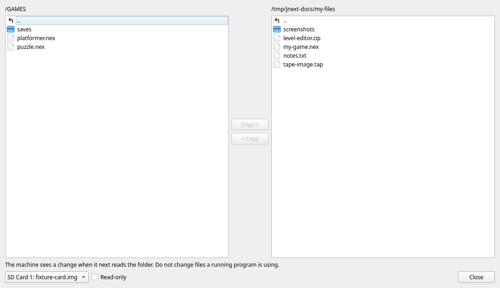

5.13 The SD card file manager¶
File ▸ SD Card File Manager… (or the SD card button on the toolbar, next to Load) opens a window to move files between the SD card of the running machine and a folder of your computer, with the mouse. The card is on the left, a folder of your computer on the right. It needs no command line, and it works on the card that NextZXOS is using, however it was made.
The machine keeps running while you use the window: your changes are on the card at once, and NextZXOS finds them when it next reads the folder. Read Changing the card while the machine runs before you change files a program may be using.

Opening it¶
The window does not pause, restart or otherwise touch the machine. It stays open beside the main window: switch between the two as you like, and use the machine while the window is open. Opening it a second time brings the same window forward. The menu entry has no keyboard shortcut.
While an SD-card upgrade or go-back is working on the card, the window will not open (it says why), and one that is already open goes inert: it makes no access to the card and greys every card action, with a note, until the work is done. It then looks at the card again.
The two panes¶
-
The card pane (left) lists a folder of the card in the slot chosen in the box at the bottom of the window: SD Card 1: file name or SD Card 2: file name (the image's file name; hover for its full path), and
SD Card 2: <empty>for a slot with no card, which is greyed.The two slots are the ones of File ▸ Insert SD Card Image… (card 1) and Insert Second SD Card Image… (card 2), and the labels follow them while the window is open.
Names are shown as the card stores them, long names included.
A name that holds a character outside plain ASCII (the card stores such names in code page 437, the DOS code page of FAT short names; an accented letter is one) is shown as
%XX, two hex digits for each such byte, because the host cannot spell it; it works with every action.An entry the card cannot address by any name (a short name repeated behind an earlier entry, or a name holding the byte 7F) is listed but cannot be acted on, and its tooltip says so.
-
The host pane (right) is an ordinary folder of your computer.
Each pane has a title above it, SD Card over the card pane and Host filesystem over the host pane. Both panes are lists, the same size, with their top and bottom edges aligned; the folder each shows is written under its title. The slot selector and the Read-only box are in the bottom row, with Close, and one line under the panes tells you the rule for changing the card (or why it is read-only).
Double-click a folder, or select it and press Enter, to enter it. Every folder
except the top one (the card's root, or the root of your computer's file system) starts
with an up row, .. with a left-and-up arrow: a double-click or Enter on it
goes to the parent folder. It is not an entry: it cannot be selected, copied, dragged,
renamed or deleted. The panes show only the folder you are in, one level at a time. The
window opens at 1080 by 624 pixels, but can be resized at will.
The card pane re-reads the folder by itself. When the machine writes to the card, or another program changes the image, the pane lists the folder again within half a second, keeping your selection and your place in the list. F5 (or Refresh in the pane's menu) lists it again at once, and so does bringing the window to the front. The pane always shows what the machine has mounted; if the card in the slot is swapped while the window is open, the selector and the pane show the new card's top folder (or the card that is left after an eject).
What you can do¶
| To | Do this |
|---|---|
| Copy files and folders to the card | Select them in the host pane and press < Copy, or drag them onto the card pane |
| Copy files and folders to your computer | Select them in the card pane and press Copy >, or drag them onto the host pane |
| Move instead of copy | Hold Shift while you drop (the source is removed when it has been copied) |
| Rename | Select one item and press F2, or use the pane's context menu |
| Delete | Select items and press Delete, or use the context menu |
| Make a folder | New Folder in the pane's context menu |
| List the card folder again | F5, or Refresh in the card pane's context menu |
The context menu (right-click) of each pane also offers Copy.
- Folders are copied with everything in them.
- If the name is already there, you are asked before it is replaced; a folder is merged into, replacing the files that have the same names.
- Delete on the host sends the item to your computer's trash. Delete on the card is permanent: the card has no trash, and the confirmation says so.
- A file JNEXT is itself using cannot be deleted, renamed or overwritten from this window: the card image of a slot, a writes file, a recording being made, a loaded tape. The message names the reason and nothing is touched.
- A card item that changed since the pane listed it is not touched. The machine runs while you choose, so it can rename, delete or re-create a file between the moment the pane showed it and the moment you act (also while a question is open). Before each card item is touched, its folder is read again; an item that is no longer the entry you saw fails, with the message "changed on the card since it was listed", and the run stops there: the items after it are reported as not attempted. The pane then shows the card as it is now.
- A copy that fails part way says what was done, what failed and what was not attempted.
There is no question before a change: the card is changed as soon as you copy, move, rename, delete or make a folder (the overwrite and delete confirmations above remain).
Read-only cards¶
The Read-only box, next to the slot selector at the bottom of the window: tick it to browse and copy off the card with every card-writing action disabled. It is also ticked for you, and greyed, with the reason shown in the line under the panes, when the card cannot be written:
- the card is not FAT32 (JNEXT writes only the first FAT32 partition of a card; a FAT16 card is shown read-only);
- JNEXT was started with
--sdcard-readonly; - the machine state forbids a card change right now, for example an RZX recording is in progress;
- the card cannot be read at all.
Copying off a read-only card always works.
Changing the card while the machine runs¶
What happens. The change goes onto the card at once, and nothing restarts. JNEXT keeps no copy of the card: every block NextZXOS reads is read from the image (or from its writes file) at that moment. So NextZXOS sees your change when it next reads that folder.
The folder is read again, not watched. NextZXOS, like every FAT driver, keeps the part of the folder it last read in its memory, and brings it up to date when it reads the folder again after reading something else. So a change shows up the next time the program goes to look:
- in the Browser: enter a folder and come back, or leave it and open it again;
- in NextBASIC:
cdinto a folder and back, orcatanother folder, thencatthe folder again (a secondcatof the same folder straight away can still show the old listing); - a dot command you have just copied: found the next time you type it;
- a program that reads a file: finds it the next time it opens that file.
If something does not show up, have the program read another folder and then come back to this one: a program that asks again straight away, with nothing else read in between, can still get the old answer.
Your part:
- Do not change, rename or delete a file a running program has open or is writing, and do not change the card while the machine itself is saving to it. NextZXOS may hold the place of that file in its memory, and a write it makes afterwards can overwrite your change. When in doubt, let the machine sit idle in the Browser or at the command line.
- Files the machine reads only at start-up (the ROMs under
/MACHINES/NEXT,TBBLUE.FW, NextZXOS itself) take effect at the next restart. To restart the machine fresh, use the Power Reset button or Machine ▸ Power Reset. - A running program that refers to a file by its short (8.3) name will not find it after you rename the file.
- Rewinding the machine (the debugger) does not undo changes made to the card, by the machine or by this window.
Cards with a writes file¶
With --sdcard-writes FILE, everything the machine writes, and everything this window
changes, goes into FILE, and the image is not touched. The line under the panes names
the file.
Never change the image itself with other programs while it has a writes file (hdfmonkey, mtools, a loop mount, copying a new image over it). FILE holds pieces of the card's tables (which clusters are used, what each folder holds) that fit the image as it was. Change the image underneath and the two no longer fit: the machine sees a mixture, and the files on the card get damaged. Use this window instead: it writes into FILE, which is the supported way.
JNEXT warns, once, with a message box and in its log, when it notices the image of a card
with a writes file changing while it runs, and it refuses FILE at the next start (the
message offers --sdcard-writes-reset, which discards the changes in FILE). It cannot
notice a change that keeps the image's modification time (touch -r, cp -p): that is
not a safe thing to do either.
To get a plain image with your changes in it, use --sdcard-writes-flatten OUT.
Changing the card from outside JNEXT¶
The supported way is this window. Without a writes file, another program that writes the image while JNEXT runs writes the same file the machine reads, and works as this window does, under the same rules (above). JNEXT does not see the write itself and cannot tell which program made it, but it notices that the image changed within half a second and lists the folder again in the card pane. It cannot tell what a running program has open.
With a writes file, never change the image from outside. The window and the warnings
that point here are about this: a card started with --sdcard-writes FILE keeps every
change in FILE, and an image changed underneath it no longer fits FILE (see
Cards with a writes file). Use this window for such a card.
Never replace, delete or resize the image file while it is in use (some tools write a new file and rename it over the old one; some change the card's size). The machine keeps the old file, and what it writes is lost when JNEXT exits (with a writes file, it goes into that file, which no longer fits a replacement image, or cannot be used again without a deleted one); a resized image keeps its old size. JNEXT warns once when it sees any of these, in any mode, and says no more about that file after a replace or a delete.
What it remembers¶
The window opens on the card, the card folder and the host folder it was closed on, also after JNEXT is restarted. The machine wins: if the card it remembers is no longer mounted, it opens on the card that is (the first one), at its top folder; a folder that has gone is replaced by the top folder (the card) or the nearest folder that still exists (the host). No message is shown for any of this.
The three values are kept in the settings file and can be set from the command line like any other setting:
jnext --set sdcard_manager.host_dir=$HOME/games
The keys are sdcard_manager.card, sdcard_manager.card_dir and
sdcard_manager.host_dir.